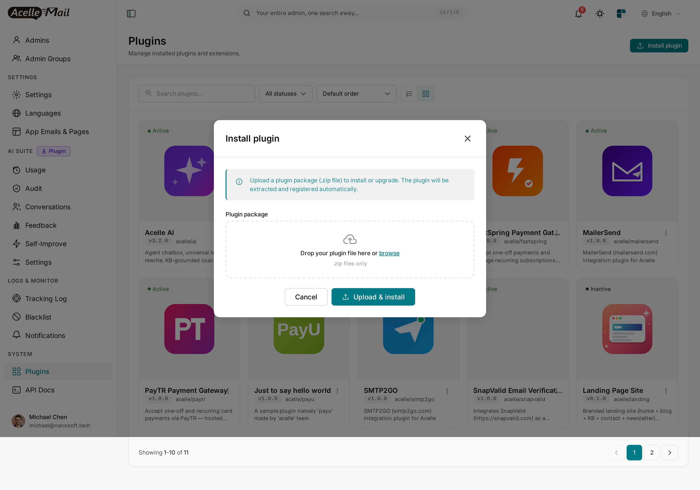
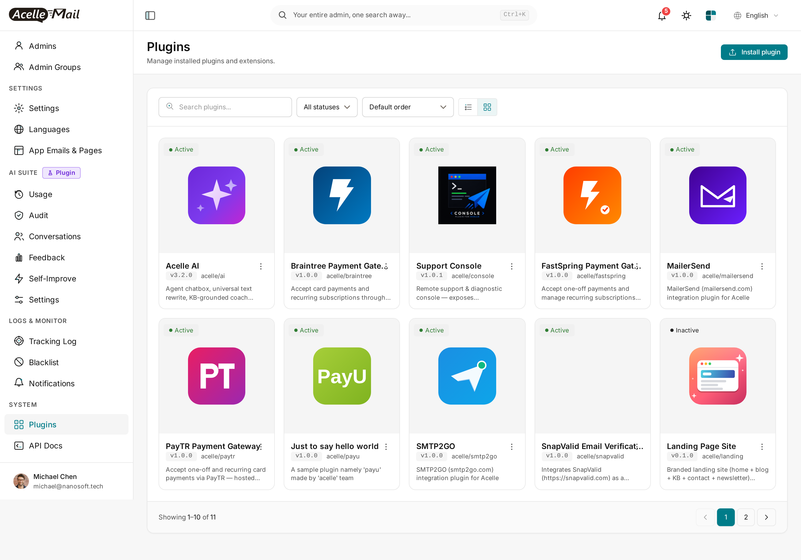
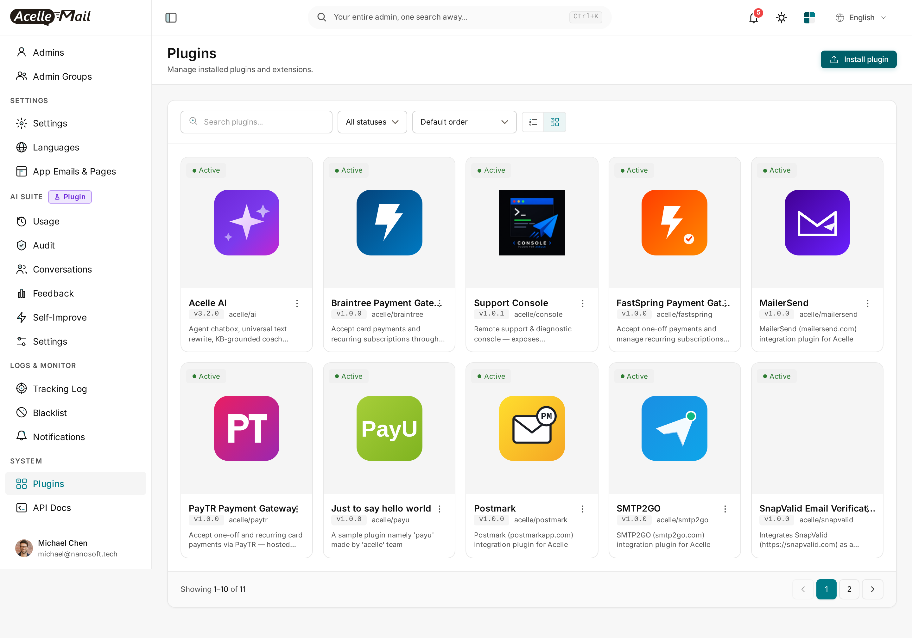
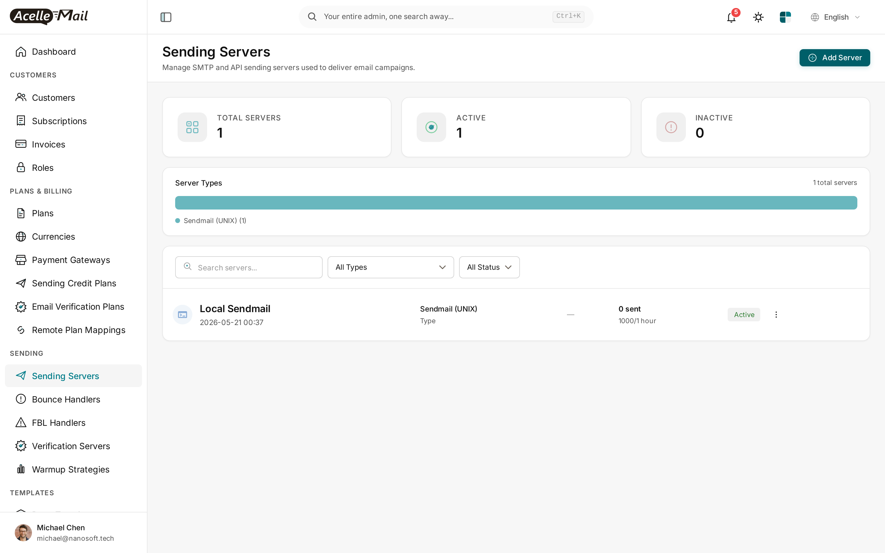
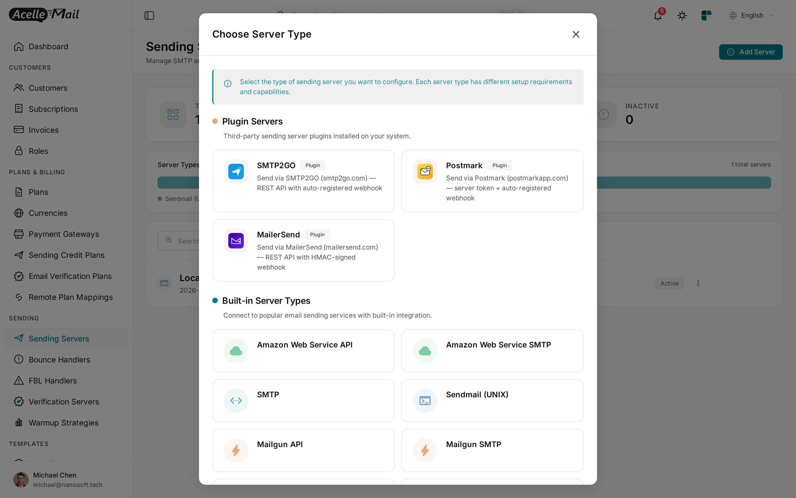
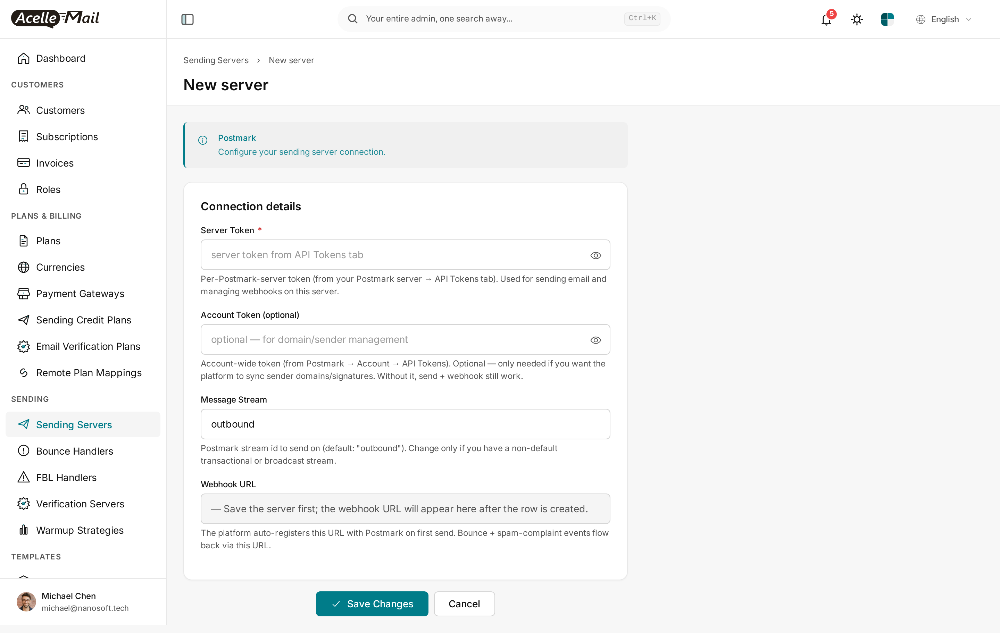
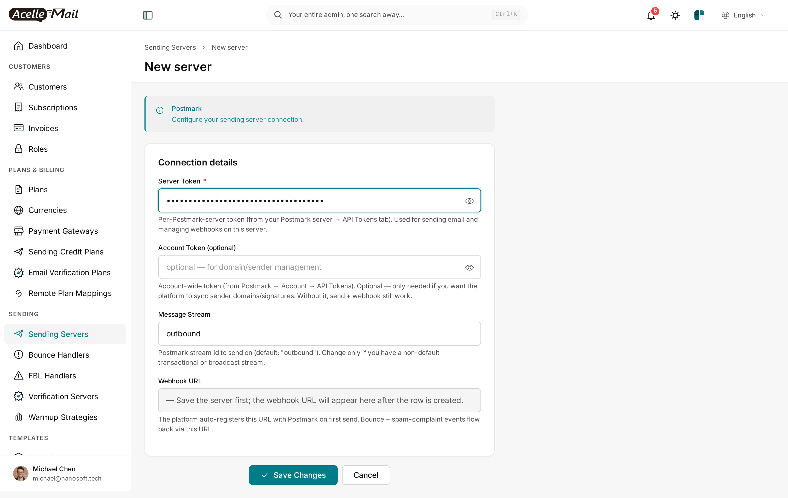

Postmark for Acelle Mail — User Guide
A drop-in plugin that adds Postmark (postmarkapp.com) as a sending-server type in Acelle. Postmark is famous for best-in-class transactional deliverability — they're transactional-focused, IP-isolated, and refuse to onboard cold-email senders. If you care about emails landing in the Primary tab on Gmail, Postmark is the gold-standard backend. This plugin sends via Postmark's REST API and auto-registers the bounce / spam webhook on first send.
Table of Contents
- Requirements
- Install the plugin
- Enable the plugin
- Add Postmark as a sending server
- Configure Server Token (+ optional Account Token + Message Stream)
- Auto-registered webhook — how it works
- Sending identities (signatures + DKIM domains)
- Test the connection
- Assign the server to a plan or customer
- Troubleshooting
- Uninstall
1. Requirements
| Minimum | |
|---|---|
| Acelle Mail | 4.2.0 or newer |
| PHP | 8.1+ |
| Postmark account | Free signup at postmarkapp.com. 100 free emails/month forever for accounts past approval. |
| Server Token | Per-Postmark-Server token from postmarkapp.com → Servers → your server → API Tokens. |
| Outbound HTTPS | Server must reach api.postmarkapp.com on port 443 |
| Inbound HTTPS | Acelle install reachable so Postmark can POST webhooks (URL auto-registered) |
Postmark's approval requirement. New accounts go through a short manual review before you can send live (typically <24h on a weekday) to keep their sender reputation clean. Sandbox / testing is unblocked immediately.
2. Install the plugin
- Download
acelle-postmark-v1.0.x.zipfrom CodeCanyon. - System → Plugins → Install plugin → drop ZIP → Upload & install.

After install, Postmark appears as Inactive:

3. Enable the plugin
Find the Postmark card → ⋮ → Enable.
Card flips to Active:

4. Add Postmark as a sending server
Sending → Sending Servers → + Add Server.

Picker opens. Pick Postmark from the Plugin Servers group:

5. Configure Server Token (+ optional Account Token + Message Stream)

| Field | Value |
|---|---|
| Name | Label (e.g. Postmark (transactional)) |
| Server Token | Per-Postmark-Server token from your Postmark server → API Tokens tab. Used for sending + webhook management on this server. |
| Account Token (optional) | Account-wide token from Postmark → Account → API Tokens. Only needed if you want Acelle to sync sender domains / signatures. Send + webhooks still work without it. |
| Message Stream | Postmark stream id (default: outbound — the standard transactional stream). Change only if you have a non-default broadcast stream. |
| Webhook URL | Read-only. Populated after first send. |

Click Save. The plugin verifies the Server Token with a live GET /server probe — wrong token, inline error, row not saved.
Server Token vs Account Token — what's the difference? Postmark has multiple servers per account (e.g. one for transactional, one for broadcast). Each server has its own token. The Server Token is what sends email and manages webhooks on that specific server. The Account Token is account-wide — only used here to call
/domainsand/sendersfor the identity-sync feature.
6. Auto-registered webhook — how it works
First time a campaign / automation / transactional email goes through this Postmark server, the plugin's setupBeforeSend hook fires:
- Plugin calls Postmark's
POST /webhookswith:Url:https://your-acelle-domain/webhook/acelle-postmark/{server_uid}MessageStream: the configured stream (defaultoutbound).Triggers:Bounce,SpamComplaint,SubscriptionChange.
- Postmark returns a webhook id. Plugin stores
postmark_webhook_idin the server config. - Every event Postmark emits is POSTed to your Acelle URL.
You never paste anything into Postmark's dashboard. The integration is fully automatic.
Postmark verifies the URL is reachable before saving. If your Acelle install is behind a firewall or on
localhost, the webhook registration call fails and you'll see an error. For local development, expose via ngrok / cloudflared and point Acelle'sAPP_URLat the tunnel.
7. Sending identities (signatures + DKIM domains)
Postmark has two identity kinds — both supported by this plugin if you set the Account Token:
| Kind | What it is | Use when |
|---|---|---|
| Sender Signature (email-level) | One specific email address verified via click-the-link confirmation | Quick start; sending from one address; no DKIM |
| Domain (full domain) | A full domain authenticated with DKIM CNAME records | Production sending; any local-part; required for high-volume + Primary-tab placement |
The plugin syncs both into Acelle's sending_identities table when an Account Token is present:
- Two-way sync —
GET /senders+GET /domainsreconcile with Acelle on every sync. - Add a domain from inside Acelle —
POST /domainsfires when admin (or customer with permission) registers a new sending domain. - Re-verify on demand —
PUT /domains/{id}/verifydkimexposed as the Re-check button.
Without an Account Token, send + webhook still work but you'll manage signatures / domains directly in Postmark's dashboard.
Why DKIM matters
With DKIM + SPF + DMARC alignment (Postmark's /domains API surfaces all three), receiving mailbox providers (Gmail, Outlook, Yahoo, Apple Mail) authenticate the message and place it in the Primary tab instead of Promotions / Spam.
8. Test the connection
(a) Connection test — built into the new-server form. Save handler runs a live /server probe against the Server Token.
(b) Test send — from the Sending Servers list, ⋮ → Test send. Single test email through the driver. The first test send also triggers webhook auto-registration — see §6.
9. Assign the server to a plan or customer
| Model | When to use |
|---|---|
| System server, plan-attached | Your Acelle SaaS sends on behalf of customers. Assign Postmark at Admin → Plans → [plan] → Sending Servers. |
| Per-customer | A customer brings their own Postmark account. They add the server from their own Sending Servers page. |
10. Troubleshooting
| Symptom | Likely cause | Fix |
|---|---|---|
| "401 Unauthorized" on save | Server Token wrong or revoked | Re-copy from Postmark → your server → API Tokens |
| First send fails with "Webhook registration failed" | Acelle install unreachable from Postmark's network | Acelle must be publicly reachable over HTTPS. For dev, use ngrok / cloudflared. |
| Sends rejected with "Inactive recipient" | Postmark's suppression list blocks the address | Check Postmark dashboard → Suppressions; reactivate if false-positive |
| Sends accepted but never delivered | New Postmark account still pending approval | Submit your account for review at postmarkapp.com → Account → Request approval. <24h on weekdays. |
| Identity sync fails with "Account Token required" | The Account Token field is blank | Either add an Account Token, or accept that identity management happens in Postmark's dashboard |
| Plugin Active but Postmark missing from picker | Stale opcache / view cache | php artisan optimize:clear and reload |
Plugin HTTP calls log to storage/logs/laravel.log.
11. Uninstall
- System → Plugins → find Postmark → ⋮ → Disable. New sending servers can no longer be created with this driver; existing rows still work.
- To remove files: ⋮ → Delete. Drops every
sending_serversrow of typeacelle-postmark.
You may also want to disable the webhook in Postmark's dashboard manually.
Support
- Documentation: this guide + plugin source code comments
- Issue tracker / questions: CodeCanyon item comments page
- Direct contact: see the Author column on the CodeCanyon item page
Postmark account / approval / domain-verification issues go to Postmark support directly.